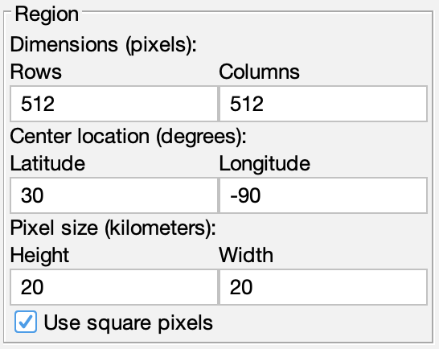

The region parameters panel allows you to modify the master region rows and columns, center earth location, and pixel width and height:

The Dimensions specify the physical number of pixels in the rows and columns directions and directly determine the grid size and amount of disk space used by data registered to the master region.
The Center location specifies the earth location of the point that occurs at the center of the master region in decimal degrees, [-90..90] for latitude and [-180..180] for longitude. This is not to be confused with the central meridian or projection origin parameters required for some projection systems such as Mercator or Polar Stereographic. The projection parameters and region parameters operate independently -- the projection parameters provide an overall map projection context, while the region parameters specify a rectangular box within that context.
The Pixel size specifies the physical width and height of each pixel in the map coordinate space in kilometers. The exception is for Geographic projections which use pixel sizes in degrees. Select the Link option to keep pixels square, which is the default setting.
Once the new region parameters are entered, click Apply to update the master view. You can also click Revert to reset the region parameters back to the current master view if you make a mistake.